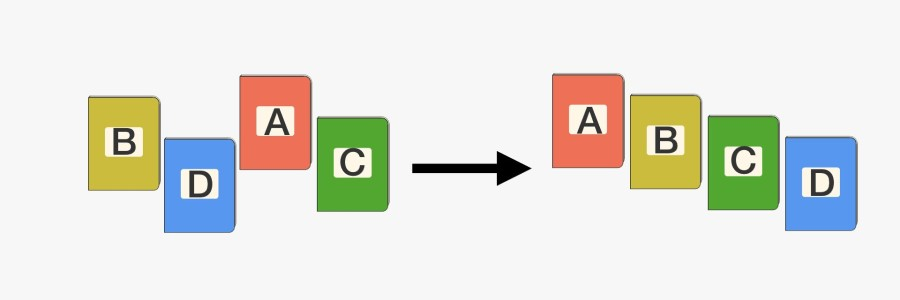
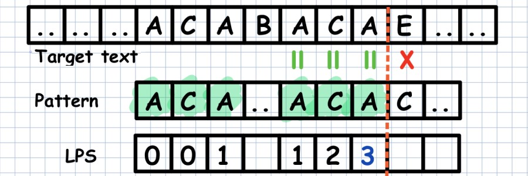
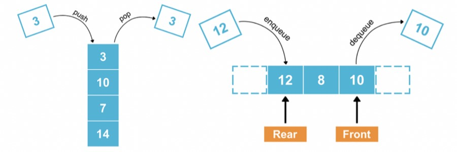
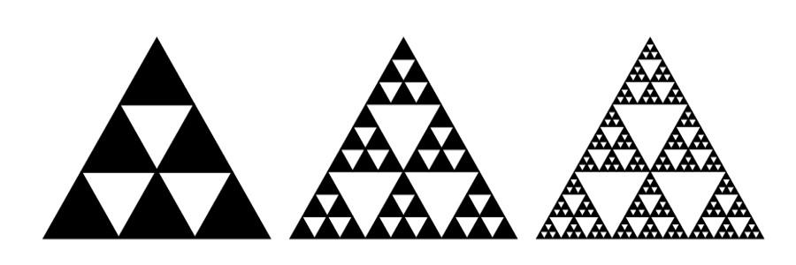
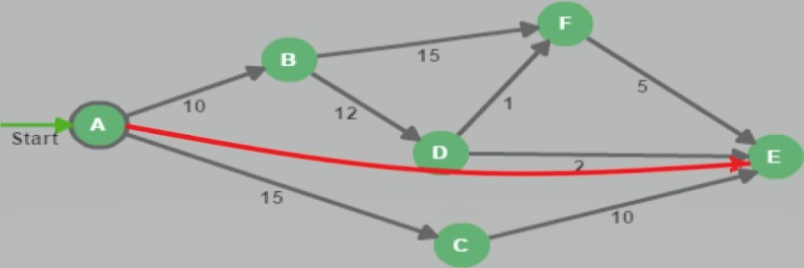

Сортировка массива:
Python
В этих работах представлены основные виды сортировок и примеры их реализации.
Методы поиска массива:
Python
В этих работах представлены основные виды поиска и примеры их реализации.

Методы поиска подстроки в строке:
Python
В этих работах представлены виды поиска Кнута-Морриса-Пратта, Бойера-Мура и Алгоритм A* поиска на графе.

Стек, дек, очередь:
Python
В этих работах представлены реализации структуры данных:● Стек (stack)● Дек (deque) и примеры их реализации.

Рекурсия, фракталы:
Python
В этих работах представлены реализации с применением рекурсивных функций генерации заданного типа фрактала.

Динамические алгоритмы поиска путей:
Python
В этих работах представлены реализации алгоритмов поиска путей между двумя вершинами ориентированного взвешенного графа.